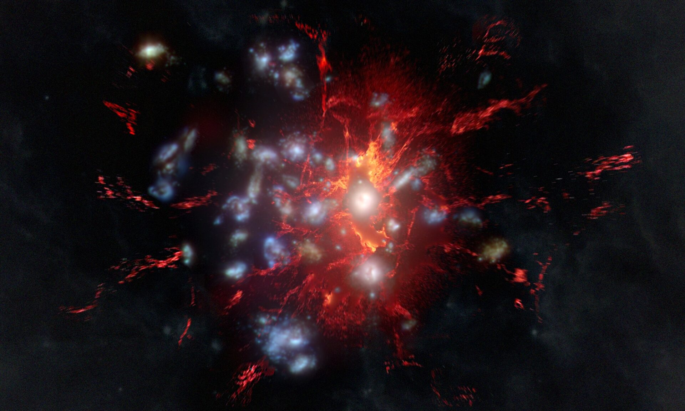

I am a PhD student in astronomy at the University of British Columbia.
My research explores the galaxy evolution and cluster formation in the early Universe. I am particularly interested in the intracluster medium: the diffuse gas between galaxies that records how clusters assemble and influences the growth of their member galaxies.
I combine millimeter observations with a wide range of multi-wavelength data, from X-ray to radio, to connect hot cluster atmospheres, cold molecular gas, and star formation. Much of my work focuses on distant protoclusters, including the exceptionally active system SPT2349−56 at redshift 4.3.
When do the first cluster atmospheres emerge, and how do they change galaxy evolution?
02 / Research
Research interests
Connecting black-hole activity, galaxy growth, and the emergence of cluster atmospheres.

SPT2349−56, z = 4.3 · Artist’s impression of its extended molecular gas. Credit: MPIfR/N.Sulzenauer.01
AGN feedback
How do supermassive black holes reshape their large-scale environment?
Accretion onto supermassive black holes releases energy through radiation, winds, and jets. I investigate how this energy couples to gas on galactic and protocluster scales, and whether it can explain the unexpectedly large thermal reservoirs in young cluster atmospheres. Combining radio observations of active galactic nuclei (AGN) with measurements of diffuse gas allows me to connect black-hole activity to the heating and redistribution of their surroundings.
Dense environments can both sustain intense star formation and bring it to an end. I study how gas accretion, galaxy interactions, and ram-pressure stripping change the fuel supply of galaxies during early cluster assembly. Resolved observations of cold gas and stellar populations help reveal when these environmental processes become effective, and how they contribute to the emergence of quiescent galaxies.
How do protoclusters build their stellar mass before dynamical relaxation?
I investigate how star formation and galaxy accretion build the stellar content of protoclusters, while interactions and mergers redistribute it. Dusty star-forming galaxies trace rapid stellar growth, while molecular-gas observations reveal the reservoirs that sustain it. My aim is to connect the buildup and spatial distribution of stellar mass to the formation of dense cluster cores, and establish how much of this growth precedes dynamical relaxation.
When and why do cluster atmospheres approach self-similar behaviour?
Mature, massive clusters exhibit relatively regular gas profiles and scaling relations, particularly outside their cores. I investigate how this behaviour emerges from the disturbed, rapidly evolving atmospheres of protoclusters. By combining thermal Sunyaev–Zel’dovich and X-ray observations, I aim to trace the evolution of gas pressure, density, temperature, and entropy, and separate the effects of gravitational heating, feedback, and incomplete thermalization. This connects early cluster physics to the observable–mass relations used in cluster cosmology.
Using ALMA and ACA observations, I led the detection of the thermal Sunyaev–Zel’dovich signal from hot intracluster gas in SPT2349−56. Its large thermal energy reservoir exceeds the expectation from gravitational heating alone, revealing that substantial heating can occur during the earliest stages of cluster assembly.
Zhou et al. 2026 · Nature, 649, 1130–1133
Sunyaev–Zeldovich detection of hot intracluster gas at redshift 4.3
With resolved ALMA and JWST observations, I investigate an extreme ram-pressure stripping event in a galaxy within the SPT2349−56 core. This study shows that young cluster atmospheres can already remove the cold gas from their member galaxies, connecting the emergence of the intracluster medium to the environmental regulation of galaxy growth.
Zhou et al. 2026 · Submitted to Nature Astronomy
An extreme ram-pressure stripping event in a hot protocluster core at redshift 4.3
By comparing ACA and higher-resolution ALMA observations of CO(4–3), I uncovered extended molecular emission beyond the gas recovered in individual galaxies, nearly doubling the inferred gas reservoir, which may sustain the protocluster's extraordinary star formation for hundreds of millions of years. The discovery highlights the importance of short-baseline interferometric observations for understanding early cluster assembly.
Zhou et al. 2025 · ApJL, 982, L17
A Large Molecular Gas Reservoir in the Protocluster SPT2349−56 at z = 4.3
I used submillimeter observations to map dusty star-forming galaxies around the powerful radio galaxy 4C 23.56. Their distribution is anisotropic, with fewer sources along the radio-jet axis and an excess of bright sources toward the outskirts.
Zhou et al. 2024 · A&A, 690, A196
The RAdio Galaxy Environment Reference Survey (RAGERS): Evidence of an anisotropic distribution of submillimeter galaxies in the 4C 23.56 protocluster at z = 2.48
The RAdio Galaxy Environment Reference Survey (RAGERS): Evidence of an anisotropic distribution of submillimeter galaxies in the 4C 23.56 protocluster at z = 2.48
Zhou D., Greve T. R., Gullberg B., Lee M. M., et al.
PhD student in Astronomy · Advisor: Scott Chapman Expected completion: August 2027
2021–2023
Technical University of Denmark
PhD studies in Astronomy, Cosmic Dawn Center Advisor: Thomas Greve
2019–2021
Leiden University
MSc in Astronomy · Cum laude
2015–2019
Wuhan University
BSc in Physics · Honours
Awarded observing programs
PI and co-PI programs spanning millimeter, radio, and infrared observations.
Awarded programs as principal investigator or co-principal investigator
Facility
Program
PI / co-PI
ALMA
2025.1.00390.S 2025.1.01307.S
D. Zhou
NOEMA
S22CI S24BU · S24DM
D. Zhou & T. Greve D. Zhou & F. Bertoldi
JWST
Cycle 5 GO-12813
D. Zhou & S. Chapman
VLA
27A-523
D. Zhou
GBT / MUSTANG-2
27A-432
D. Zhou
IRAM-30m / NIKA2
234-26
D. Zhou & F. Bertoldi
Additional co-investigator programs include ALMA, JWST, VLA, Chandra, XMM-Newton, NOEMA, VLT/KMOS, LMT/TolTEC, JCMT/SCUBA-2, and Keck/LRIS. The full list is in my CV.
Selected talks
2026
Asia-Pacific Regional IAU Meeting · Hong Kong
2026
DAO colloquium · Herzberg Astronomy and Astrophysics Research Centre
2026
247th American Astronomical Society meeting · Phoenix
2025
ObsCos seminar · Caltech
2025
Galaxy Cluster Group seminar · CfA | Harvard & Smithsonian